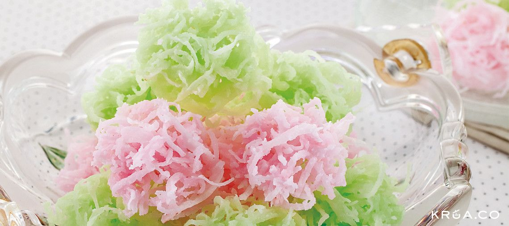

>>> เปิดบริการ 24 ชั่วโมง (ถ้าเจ้าของร้านไม่หลับ) <<<< /div>
มะพร้าวแก้ว

วัตถุดิบที่ใช้
- มะพร้าวทึนทึก 1 ลูก
- น้ำตาลทรายขาว 1 ถ้วย
- น้ำลอยดอกมะลิ ½ ถ้วย
- เกลือสมุทร ¼ ช้อนชา
- สีผสมอาหารสีต่างๆตามต้องการ
- อุปกรณ์เฉพาะ มือแมว, กระทะทองเบอร์ 11, พายไม้
ขั้นตอนการทำ
- ขูดมะพร้าวทึนทึกเป็นเส้นฝอยด้วยมือแมว (ที่ขูดมะพร้าว) โดยเริ่มขูดจากด้านริมก่อน
ค่อยๆขูดเข้ามาจนถึงเนื้อมะพร้าวด้านใน ขูดจนหมดเนื้อ แล้วตวงมะพร้าวทึนทึกปริมาณ 3 ถ้วย ใส่จาน
พักไว้
- ใส่น้ำตาล น้ำลอยดอกมะลิ และเกลือ ลงในกระทะทองแล้วยกขึ้นตั้งบนไฟกลางค่อนข้างอ่อน
ใช้พายไม้กวนจนน้ำตาลละลาย
ลดไฟลงกวนต่อจนเริ่มเป็นยางมะตูมสังเกตว่าฟองน้ำเชื่อมจะเล็กลงและมีความหนืดมากขึ้นมีผลึกน้ำตาลเริ่มจับที่ข้างกระทะ
ใส่สี คนให้เข้ากันทั่วจึงใส่มะพร้าวทึนทึก
ใช้พายไม้คนให้น้ำเชื่อมจับเส้นมะพร้าวทั่วและน้ำเชื่อมแห้ง ปิดไฟ
- ตักมะพร้าวแก้วในกระทะทองด้วยช้อนเล็ก 2 คัน วางลงในถาดแล้วตะล่อมให้เป็นก้อนเล็กๆ
โดยแต่ละก้อนให้วางห่างกันเล็กน้อย ผึ่งลมจนแห้ง เก็บใส่ขวดโหล ปิดฝา
ขอบคุณรูปภาพและข้อมูลจาก